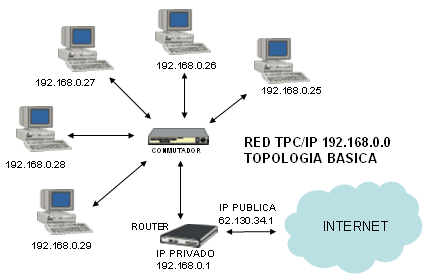
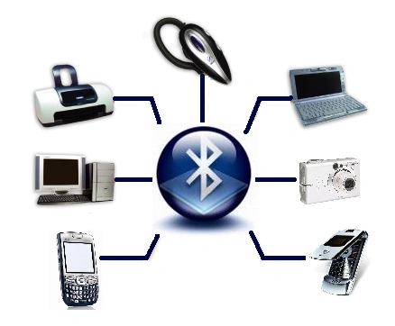

Las redes informáticas son sistemas de comunicación que permiten la interconexión de múltiples dispositivos, como computadoras, servidores, impresoras y otros equipos, para compartir recursos y datos. Utilizan protocolos de comunicación para transmitir información de manera eficiente y segura a través de medios físicos o inalámbricos. Ejemplos de redes informáticas incluyen redes de área local (LAN), redes de área amplia (WAN) y redes inalámbricas (Wi-Fi).
LAN: Red de área local. Su extensión esta limitada fisicamente a un edificio o a un entorno de hasta 200 metros.
PAN: Red de área personal. Interconexión de dispositivos en el entorno usuario.
 MAN: Red de área metropolitana. Conjunto de redes LAN, en el entorno de un municipio.
WLAN: Red local inalámbrica
WAN: Una Red de Área Amplia (Wide Area Network ), es un tipo de red de computadoras capaz de cubrir distancias desde unos 100 hasta unos 1000 km, dando el servicio a un país o un continente.
WIMAX: red inalámbrica en el entorno de unos 5 a 50 km.
This site was created with the Nicepage